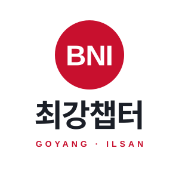
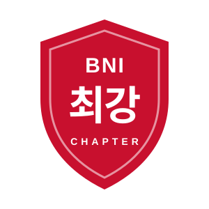
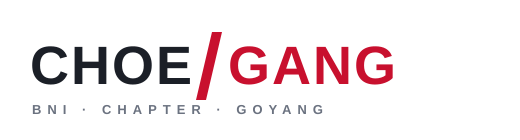
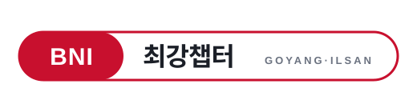
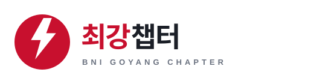

마음에 드는 번호를 알려주시면 다듬어서 사이트 로고로 교체합니다.SVG 버튼으로 원본을 내려받을 수 있습니다. 최종 제작 시에는 글자를 윤곽선(아웃라인)으로 변환해 사용하세요.
기존 로고 구조를 유지하고 번개 O를 정돈한 기본형
BNI 원형 + 굵은 한글 '최강챕터', 지역명 보조

원형 심볼 위, 한글 아래 — SNS 프로필·현수막용

'최강'의 강인함을 방패로 표현, 배지·굿즈용

CHOEGANG 워드마크에 빨간 사선 포인트
둥근 테두리 문구 + 중앙 '최강', 인증 마크 느낌
C·G 이니셜 블록, 파비콘·앱 아이콘에 적합

빨간 캡슐 BNI + 한글명, 웹 헤더에 깔끔

번개 아이콘으로 '최강'의 에너지 강조
왕관 + 골드 포인트, 시상·행사용 고급형